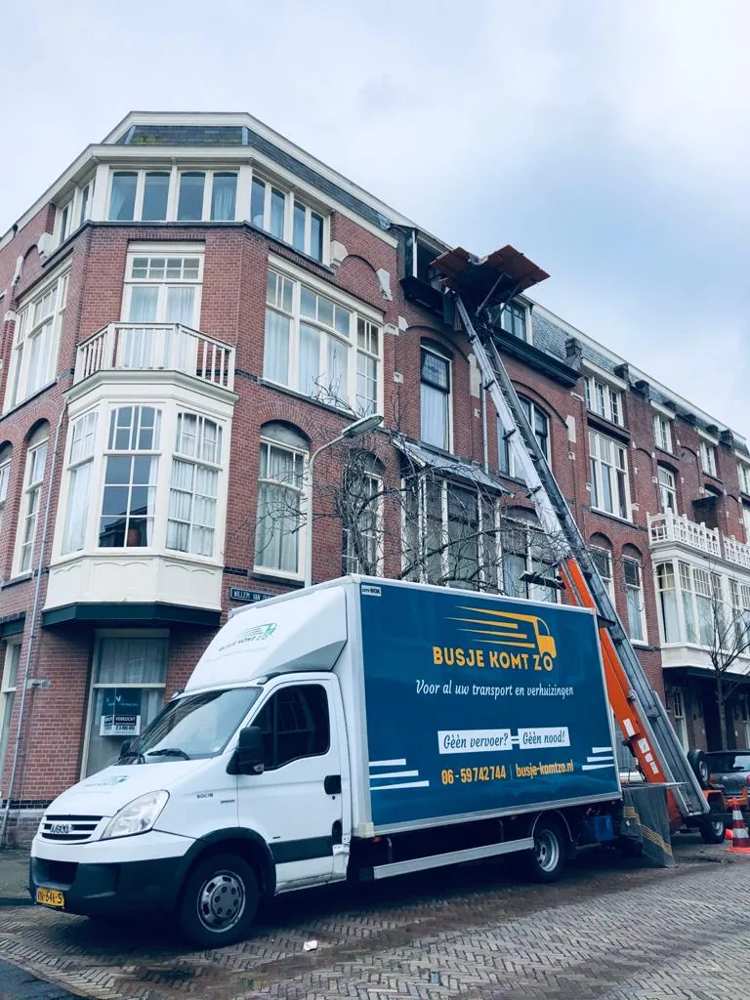
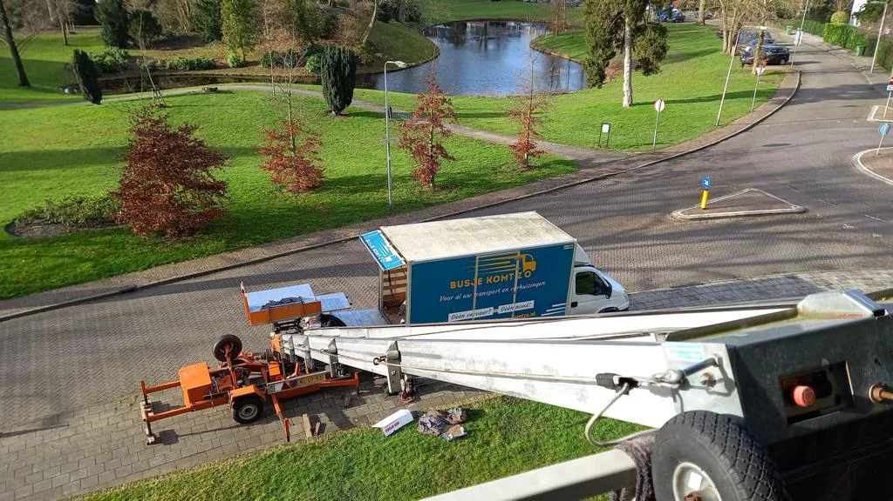
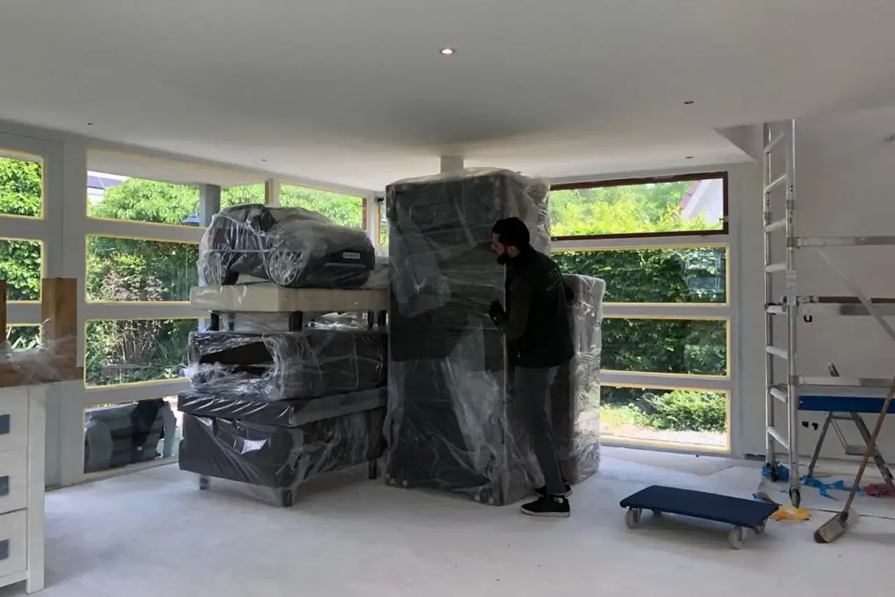
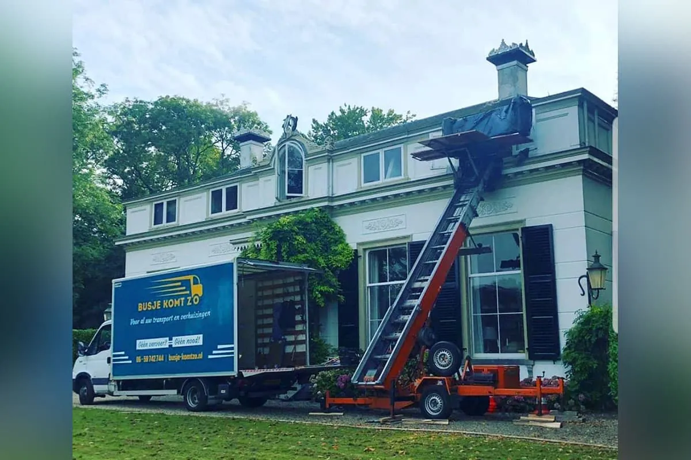

Particulier verhuizen
Appartement, eengezinswoning of studio, met of zonder lift. Wij dragen, rijden en zetten alles op zijn plek.
Meer hieroverFamiliebedrijf uit Utrecht · meer dan 15 jaar ervaring

Wij komen langs, bekijken uw inboedel en leggen één bedrag vast. Geen nacalculatie, geen weekendtoeslag, geen verrassingen op de dag zelf.
Reactie meestal binnen een paar uur · vrijblijvend



Verhuizen, transport en opslag
Echte foto's van onze verhuizingen: eigen verhuiswagens, een eigen verhuislift en meubels die met dekens en folie worden beschermd.
Diensten
Kies wat u nodig heeft. Twijfelt u? Bel of app ons, dan zeggen we eerlijk wat bij uw situatie past. Alle diensten bekijken →
Appartement, eengezinswoning of studio, met of zonder lift. Wij dragen, rijden en zetten alles op zijn plek.
Meer hieroverKantoor of bedrijfsinventaris, gepland op een moment dat uw werk zo min mogelijk stilligt.
Meer hieroverSmalle trap of een grachtenpand? Dan gaat uw inboedel veilig via het raam naar binnen of buiten.
Meer hieroverZit er tijd tussen twee sleutelmomenten? Dan regelen we tijdelijke opslag tussen uw oude en nieuwe woning.
Meer hieroverWij pakken in, beschermen breekbare spullen en pakken op het nieuwe adres weer uit.
Meer hieroverMoet het snel? Bel ons, dan bekijken we samen wat er nog kan.
Bel 085 050 8282Woning of bedrijfspand helemaal leeg en bezemschoon opgeleverd, inclusief afvoer.
Meer hieroverEén meubelstuk of een losse lading? Ook kleine transporten rijden wij.
Meer hieroverBusje komt zo aan het werk
Echte beelden van onze verhuizingen in Utrecht en omgeving: eigen wagens, eigen verhuislift en zorgvuldig ingepakte meubels.

Waarom Busje komt zo
Wij komen langs, bekijken uw inboedel en leggen één bedrag vast.
Ook verhuizen op zaterdag of zondag kost niets extra.
Persoonlijk contact via WhatsApp, telefoon of e-mail.
Ervaringen van klanten
Echte ervaringen van klanten in Utrecht en omgeving, op Google en Trustoo.
“Wat een topervaring bij Busje Komt Zo. Van de eerste offerte tot het monteren van de laatste kast was alles 10/10. Duidelijke communicatie, nette en zorgvuldige aanpak en een super service.”
“… Prima job, goeie gasten, deden voorzichtig met m’n spullen, geen schade, geen klachten. Uitladen op 2 adressen was geen probleem, ruim binnen de tijd klaar, zonder stress. Van harte aan te bevelen dus.”
“Top ervaring! Hele professionele aardige mannen. Werken netjes en efficiënt. Zou ze absoluut aanraden.”
“Top verhuisbedrijf. Het was allemaal snel geregeld zonder dat ik allerlei vragenlijsten moest invullen. … Ik had echt veel spullen, maar heb nog nooit zo'n efficiënte en vlotte verhuizing gehad.”
“Vriendelijk, netjes gewerkt, op tijd en vlot met de montage.”
“Hard gewerkt en een grote verhuizing snel en zorgvuldig uitgevoerd.”
Wie zijn wij?
Verhuisbedrijf Busje Komt Zo is een familiebedrijf uit Utrecht met meer dan 15 jaar ervaring in verhuizen. Als verhuisbedrijf in Utrecht helpen wij particulieren en bedrijven bij hun verhuizing, binnen de stad en naar de regio: Nieuwegein, Houten, Zeist, De Meern, Maarssen, Amersfoort, Hilversum en Amsterdam.
Bij Busje Komt Zo werkt u met een vast team, één vaste prijs die vooraf duidelijk is en volledig uitgeruste verhuiswagens. Daarom waarderen onze klanten ons met een 4,9 op Google en een 9,6 op Trustoo. Vraag vandaag nog vrijblijvend een offerte aan voor uw verhuizing in Utrecht of omgeving.

Verhuizen in en rond Utrecht
Kies de route die bij uw aanvraag past. Daarna controleert u beide adressen, bereikbaarheid, volume en gewenste hulp.
Beschrijf vertrek en aankomst afzonderlijk. Etage, lift, loopafstand en laadruimte kunnen per adres verschillen.
Controleer een route binnen Utrecht →Geef ook de aankomstzijde volledig door, zodat toegang, verkeersruimte en mogelijke voorbereiding beoordeeld kunnen worden.
Bereid uw aankomst in Utrecht voor →Laat de volledige route beoordelen. De afstand alleen vertelt nog niet hoeveel tijd, mensen of voertuigruimte nodig zijn.
Bereken eerst het verhuisvolume →
Goed voorbereid verhuizen
Een goede offerte begint niet bij uw telefoonnummer, maar bij de verhuizing zelf. Beschrijf beide adressen, de bereikbaarheid en wat er meegaat. Zo kan uw aanvraag gericht worden beoordeeld.
Bereid uw verhuizing in Utrecht voor →Bekijk de volledige werkwijze →Veelgestelde vragen
Duidelijke antwoorden op de meestgestelde vragen over verhuizen in Utrecht en omgeving.
Ja. We spreken vooraf een duidelijke, vaste prijs af nadat we uw verhuizing hebben beoordeeld, helder en zonder verrassingen achteraf.
Van uw hoeveelheid (m³), de afstand, de bereikbaarheid zoals etage en lift, en de hulp die u wenst. Vertel ons uw situatie en u krijgt een voorstel op maat.
Dat hoeft u niet zelf te bepalen. Op basis van uw inboedel en de toegang stellen wij het juiste team samen, zodat uw verhuizing vlot en veilig verloopt.
Dat hangt af van het volume en de bereikbaarheid van beide adressen. We plannen efficiënt en bespreken vooraf een realistische tijdsinschatting.
Vaak snel. Een spoedverhuizing hangt af van de actuele beschikbaarheid. Bel of app ons, dan kijken we wat er mogelijk is.
Ja. Geef zware of bijzondere spullen, zoals een grote kast of wasmachine, vooraf door. Dan plannen we genoeg mensen in en zetten we zo nodig onze eigen verhuislift in.
Ja, ook in het weekend, en zonder weekendtoeslag. Geef uw gewenste datum door en we stemmen de planning met u af.
Ja. Wij kunnen uw inboedel in- en uitpakken en meubels demonteren en monteren. Geef het aan bij uw aanvraag.
Meestal binnen een paar uur. Wilt u direct schakelen? Bel 085 050 8282 of app 06 34 75 56 56.
Bel of app ons. U krijgt snel persoonlijk antwoord van Busje komt zo.